データの可視化
最終更新日：2026-11-07 | ページの編集
概要
質問
- Rによる可視化
目的
- ggplotを用いて、散布図、箱ひげ図、折れ線グラフなどを作成します。
- 共通のプロット設定を行います。
- ファセットとは何かを説明し、ggplotでファセットを適用してください。
- 既存のggplotプロットの外観（軸ラベルや色を含む）を変更してください。
- データフレーム内のデータから、複雑でカスタマイズされたプロットを作成します。
このエピソードは、Data Carpentriesの「生態学者のためのRによるデータ分析と可視化」レッスンに基づいています。
データの可視化
まず、必要なパッケージを読み込みます。ggplot2はtidyverseパッケージに含まれています。
R
library("tidyverse")
まだワークスペースにない場合は、前回のレッスンで保存したデータを読み込んでください。
R
rna <- read.csv("data/rnaseq.csv")
データ可視化チートシートでは、ggplot2の基本機能から高度な機能までを解説します。また、本パッケージで利用可能な多彩なデータ表現の概要を把握するとともに、備忘録としてもご活用いただけます。Thomas
Lin Pedersen氏による以下のビデオチュートリアル（パート1およびパート2）も非常に参考になります。
ggplot2によるプロット
ggplot2は、データフレーム内のデータから複雑なプロットを簡単に作成できるプロットパッケージです。どの変数をプロットするか、どのように表示するか、および全般的な視覚的プロパティを指定するための、よりプログラム的なインターフェースを提供します。ggplot2を支える理論的基盤は、Grammar
of Graphics（ Wilkinson (2005)
）です。この手法を用いれば、基礎となるデータが変更された場合や、棒グラフから散布図に変更する場合でも、最小限の変更で済みます。これにより、最小限の調整や微調整で、論文掲載レベルのプロットを作成することが可能になります。
ggplot2 ( Wickham (2016) )
に関する書籍があり、概要を把握するのに適していますが、内容は古くなっています。第3版が準備中で、オンラインで無料で公開される予定です。ggplot2のウェブページ
(https://ggplot2.tidyverse.org)
には充実したドキュメントが掲載されています。
ggplot2
は、「ロング」形式（つまり、次元ごとに1列、観測値ごとに1行）のデータを想定して動作します。適切に構造化されたデータを使用することで、ggplot2
で図を作成する際の時間を大幅に短縮できます。
ggplotのグラフィックスは、新しい要素を順次追加することで構築されます。このようにレイヤーを重ねていくことで、プロットの自由度とカスタマイズ性を大幅に高めることができます。
Grammar of Graphicsの考え方は、あらゆるグラフを次の3つの構成要素から構築できるというものです。(1) データセット、(2) 座標系、(3) geoms — すなわち、データポイントを表す視覚的なマーク 1
ggplotを作成する際は、さまざまな種類のプロットに活用できる以下の基本テンプレートを使用します。
ggplot(data = <DATA>, mapping = aes(<MAPPINGS>)) + <GEOM_FUNCTION>()-
ggplot()関数を使用し、data引数を用いてプロットを特定のデータフレームに紐付けます。
R
ggplot(data = rna)
- プロットする変数を選択し、それらをグラフ上でどのように表示するか（例：x/y座標、あるいはサイズ、形状、色などの属性）を指定することで、マッピング（aesthetic
(
aes) 関数を使用）を定義します。
R
ggplot(data = rna, mapping = aes(x = expression))
-
「geoms」――プロットにおけるデータの幾何学的表現（点、線、棒）を追加します。
ggplot2では多種多様なgeomsが提供されています。今回は、以下を含む代表的なものをいくつか使用します：* `geom_point()` for scatter plots, dot plots, etc. * `geom_histogram()` for histograms * `geom_boxplot()` for, well, boxplots! * `geom_line()` for trend lines, time series, etc.
プロットに図形を追加するには、+
演算子を使用します。まずは geom_histogram()
を使ってみましょう。
R
ggplot(data = rna, mapping = aes(x = expression)) +
geom_histogram()
出力
`stat_bin()` using `bins = 30`. Pick better value `binwidth`.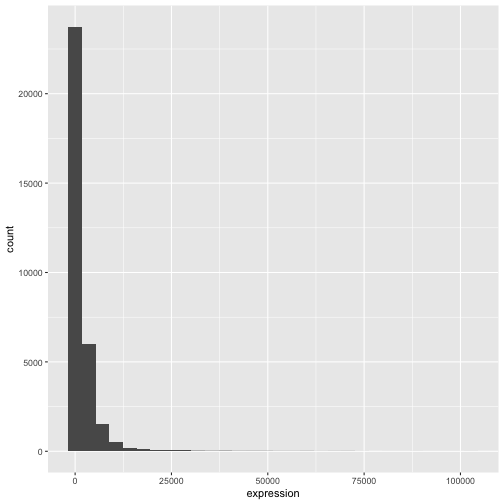
ggplot2パッケージの+は、既存のggplotオブジェクトを変更できるため、特に便利です。これにより、プロットテンプレートを簡単に作成し、さまざまな種類のプロットを手軽に探索できるようになります。したがって、上記のプロットは次のようなコードでも生成可能です。
R
# Assign plot to a variable
rna_plot <- ggplot(data = rna,
mapping = aes(x = expression))
# Draw the plot
rna_plot + geom_histogram()
課題
ヒストグラムを描画する際に、自動的にメッセージが表示されることにお気づきかと思います。
出力
`stat_bin()` using `bins = 30`. Pick better value `binwidth`.geom_histogram() の引数 bins または
binwidth を変更することで、ビンの数や幅を変更できます。
R
# change bins
ggplot(rna, aes(x = expression)) +
geom_histogram(bins = 15)

R
# change binwidth
ggplot(rna, aes(x = expression)) +
geom_histogram(binwidth = 2000)
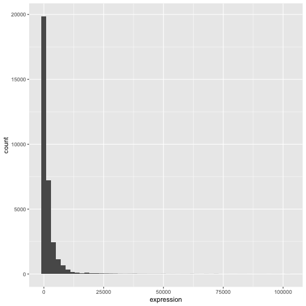
ここでは、データが右に歪んでいることが分かります。より対称的な分布にするために、底が2の対数変換を適用できます。なお、発現値が0の場合に-Infが返されるのを避けるため、ここでは小さな定数値（+1）を加算しています。
R
rna <- rna |>
mutate(expression_log = log2(expression + 1))
ここで、log2変換した発現量のヒストグラムを描くと、分布は確かに正規分布に近づいています。
R
ggplot(rna, aes(x = expression_log)) + geom_histogram()
出力
`stat_bin()` using `bins = 30`. Pick better value `binwidth`.
以降は、対数変換済みの発現値を扱います。
課題
この変換を可視化するもう一つの方法は、観測値のスケールを検討することです。例えば、プロット空間内で観測値をより適切に配置するために、軸のスケールを変更することが有効かもしれません。軸のスケール変更は、他のコンポーネントを追加・修正する場合と同様に（つまり、コマンドを段階的に追加することで）行います。実際にこの修正を試してみてください：
- 変換前の発現量をlog10スケールで表示してください。
scale_x_log10()を参照してください。先ほどのグラフと比較してください。なぜ今度は警告メッセージが表示されるようになったのでしょうか？
R
ggplot(data = rna,mapping = aes(x = expression))+
geom_histogram() +
scale_x_log10()
警告
Warning in scale_x_log10(): log-10 transformation introduced infinite values.出力
`stat_bin()` using `bins = 30`. Pick better value `binwidth`.警告
Warning: Removed 507 rows containing non-finite outside the scale range
(`stat_bin()`).
注記
-
ggplot()関数に記述した内容は、追加するあらゆるgeomレイヤーで反映されます（つまり、これらはプロット全体の設定となります）。これには、aes()で設定したx軸およびy軸のマッピングも含まれます。 - また、
ggplot()関数でグローバルに定義されたマッピングとは独立して、特定のgeomに対するマッピングを指定することも可能です。 - 新しいレイヤーを追加する際に使用する
+記号は、直前のレイヤーが含まれる行の末尾に配置する必要があります。代わりに、新しいレイヤーが含まれる行の先頭に+記号を付加した場合、ggplot2は新しいレイヤーを追加せず、エラーメッセージを返します。
R
# This is the correct syntax for adding layers
rna_plot +
geom_histogram()
# This will not add the new layer and will return an error message
rna_plot
+ geom_histogram()
プロットの反復的な作成
次に、2つの連続変数とgeom_point()関数を用いて散布図を作成します。このグラフでは、時刻8対時刻0、および時刻4対時刻0における発現量のlog2倍変化を表します。そのために、まず遺伝子ごと・時刻ごとの対数変換後の発現値の平均値を算出し、次に時刻8対時刻0、および時刻4対時刻0の平均対数発現値を差し引くことで、log倍変化を求めます。なお、ここでは後ほど遺伝子を表すために使用する遺伝子バイオタイプも含めています。倍変化の値は、rna_fc.という新しいデータフレームに保存します。
R
rna_fc <- rna |> select(gene, time,
gene_biotype, expression_log) |>
group_by(gene, time, gene_biotype) |>
summarize(mean_exp = mean(expression_log)) |>
pivot_wider(names_from = time,
values_from = mean_exp) |>
mutate(time_8_vs_0 = `8` - `0`, time_4_vs_0 = `4` - `0`)
出力
`summarise()` has regrouped the output.
ℹ Summaries were computed grouped by gene, time, and gene_biotype.
ℹ Output is grouped by gene and time.
ℹ Use `summarise(.groups = "drop_last")` to silence this message.
ℹ Use `summarise(.by = c(gene, time, gene_biotype))` for per-operation grouping
(`?dplyr::dplyr_by`) instead.次に、新たに作成したデータセット rna_fc を用いて ggplot
を作成します。ggplot2
を用いたプロット作成は、通常、反復的なプロセスとなります。まず、使用するデータセットを定義し、軸を配置し、geom
を選択します：
R
ggplot(data = rna_fc, mapping = aes(x = time_4_vs_0, y = time_8_vs_0)) +
geom_point()

次に、このプロットを修正して、より多くの情報を抽出していきます。例えば、重なりを防ぐために透明度（alpha）を追加できます。
R
ggplot(data = rna_fc, mapping = aes(x = time_4_vs_0, y = time_8_vs_0)) +
geom_point(alpha = 0.3)

また、すべての点に色を付けることもできます。
R
ggplot(data = rna_fc, mapping = aes(x = time_4_vs_0, y = time_8_vs_0)) +
geom_point(alpha = 0.3, color = "blue")

あるいは、プロット内の各遺伝子を異なる色で塗り分けるには、引数
color
にベクトルを指定することもできます。ggplot2
は、ベクトル内の異なる値に対応するそれぞれ異なる色を割り当てます。以下に、gene_biotype
を用いて色分けを行う例を示します。
R
ggplot(data = rna_fc, mapping = aes(x = time_4_vs_0, y = time_8_vs_0)) +
geom_point(alpha = 0.3, aes(color = gene_biotype))

また、ggplot()関数で指定されるマッピング内で直接色を指定することも可能です。この色はすべてのgeomレイヤーに反映され、マッピングはaes()で設定されたx軸およびy軸によって決定されます。
R
ggplot(data = rna_fc, mapping = aes(x = time_4_vs_0, y = time_8_vs_0,
color = gene_biotype)) +
geom_point(alpha = 0.3)
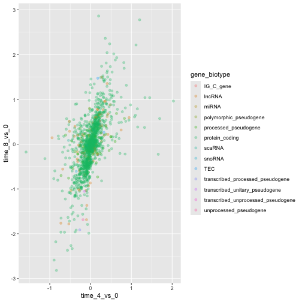
最後に、geom_abline()関数を使って斜線を追加することもできます。
R
ggplot(data = rna_fc, mapping = aes(x = time_4_vs_0, y = time_8_vs_0,
color = gene_biotype)) +
geom_point(alpha = 0.3) +
geom_abline(intercept = 0)

geomレイヤーをgeom_pointからgeom_jitterに変更しても、色は引き続きgene_biotypeによって決定される点にご留意ください。
R
ggplot(data = rna_fc, mapping = aes(x = time_4_vs_0, y = time_8_vs_0,
color = gene_biotype)) +
geom_jitter(alpha = 0.3) +
geom_abline(intercept = 0)
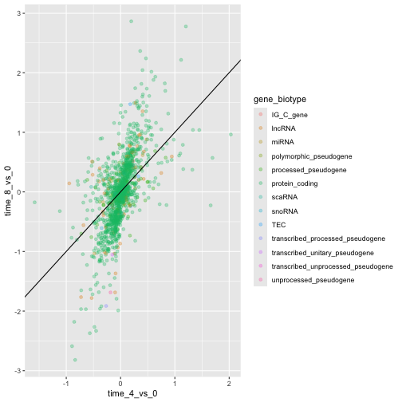
課題
散布図は、小規模なデータセットにおいて有用な探索的ツールとなり得ます。rna_fcデータセットのように観測値数が多いデータセットでは、点の重なりが散布図の制約となる場合があります。このような状況に対処する一つの手法は、観測値を六角形ビンニングすることです。プロット領域は六角形に分割されます。各六角形には、その境界内に含まれる観測値の数に基づいて色が割り当てられます。
ggplot2で六角形ビンニングを使用するには、まずCRANからRパッケージhexbinをインストールし、ロードしてください。次に、
geom_hex()関数を使用してhexbin図を作成します。六角形ビンプロットは、散布図と比較してどのような相対的な長所と短所があるでしょうか。上記の散布図を確認し、作成した六角形ビンプロットと比較してください。
R
install.packages("hexbin")
R
library("hexbin")
ggplot(data = rna_fc, mapping = aes(x = time_4_vs_0, y = time_8_vs_0)) +
geom_hex() +
geom_abline(intercept = 0)

課題
先ほど学んだ内容を活用して、rnaデータセットからexpression_logをsampleに対してプロットした散布図を作成し、時間を異なる色で表示してください。このようなデータを示す方法として、これは適切でしょうか？
R
ggplot(data = rna, mapping = aes(y = expression_log, x = sample)) +
geom_point(aes(color = time))

箱ひげ図
箱ひげ図を用いて、各サンプルにおける遺伝子発現の分布を可視化できます。
R
ggplot(data = rna,
mapping = aes(y = expression_log, x = sample)) +
geom_boxplot()

箱ひげ図に点を追加することで、測定値の数やその分布をより明確に把握できます。
R
ggplot(data = rna,
mapping = aes(y = expression_log, x = sample)) +
geom_jitter(alpha = 0.2, color = "tomato") +
geom_boxplot(alpha = 0)
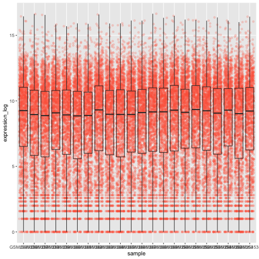
課題
ボックスプロットのレイヤーがジッターレイヤーよりも前面に配置されている点に注目してください。ボックスプロットを点の下に配置するには、コードのどこを変更すればよいでしょうか？
これら2つのgeomの順序を入れ替えるべきです。
R
ggplot(data = rna,
mapping = aes(y = expression_log, x = sample)) +
geom_boxplot(alpha = 0) +
geom_jitter(alpha = 0.2, color = "tomato")
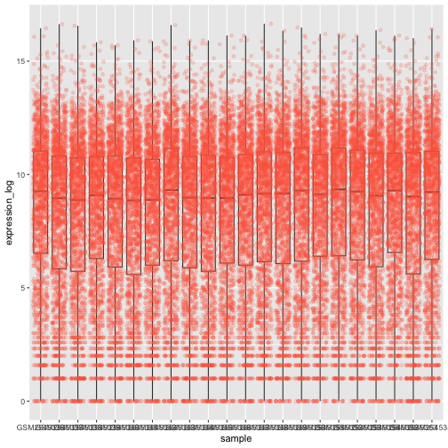
x軸の値がまだ適切に読み取れないことに気づくかもしれません。ラベルの向きを変更し、重なり合わないように垂直方向と水平方向に調整しましょう。90度の角度を使うか、あるいは試行錯誤して斜め向きのラベルに適した角度を見つけてください：
R
ggplot(data = rna,
mapping = aes(y = expression_log, x = sample)) +
geom_jitter(alpha = 0.2, color = "tomato") +
geom_boxplot(alpha = 0) +
theme(axis.text.x = element_text(angle = 90, hjust = 0.5, vjust = 0.5))
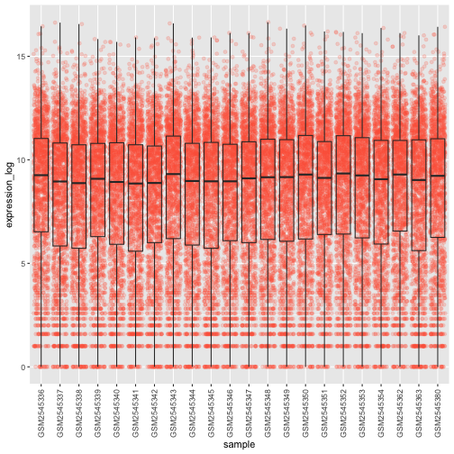
課題
箱ひげ図のデータポイントに、感染期間（time）に応じた色を付けてください。
ヒント： クラス time を確認してください。ggplot
のマッピングで、time
のクラスを整数から因子に直接変更することを検討してください。なぜこれにより、R
のグラフ作成方法が変わるのでしょうか？
R
# time as integer
ggplot(data = rna,
mapping = aes(y = expression_log,
x = sample)) +
geom_jitter(alpha = 0.2, aes(color = time)) +
geom_boxplot(alpha = 0) +
theme(axis.text.x = element_text(angle = 90, hjust = 0.5, vjust = 0.5))
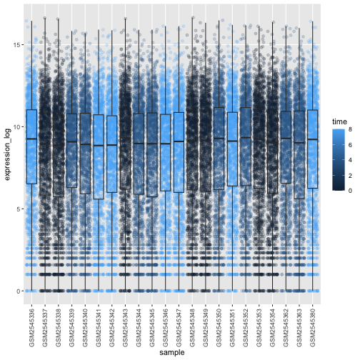
R
# time as factor
ggplot(data = rna,
mapping = aes(y = expression_log,
x = sample)) +
geom_jitter(alpha = 0.2, aes(color = as.factor(time))) +
geom_boxplot(alpha = 0) +
theme(axis.text.x = element_text(angle = 90, hjust = 0.5, vjust = 0.5))
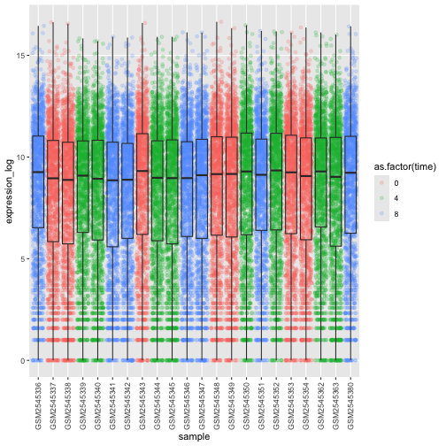
課題
箱ひげ図は有用な要約手法ですが、分布の形状は見えなくなります。例えば、分布が二峰性である場合、箱ひげ図ではそれが分かりません。箱ひげ図に代わる手法としてバイオリンプロットがあり、こちらでは（点の密度の）形状が描かれます。
- 箱ひげ図をバイオリンプロットに置き換えてください。
geom_violin()を参照してください。引数fillを用いて、時間に応じてバイオリンプロットを塗りつぶしてください。
R
ggplot(data = rna,
mapping = aes(y = expression_log, x = sample)) +
geom_violin(aes(fill = as.factor(time))) +
theme(axis.text.x = element_text(angle = 90, hjust = 0.5, vjust = 0.5))
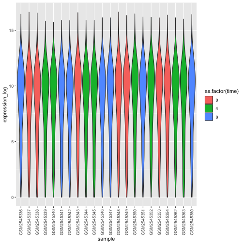
課題
- バイオリンプロットを修正し、
sexでバイオリンを塗りつぶしてください。
R
ggplot(data = rna,
mapping = aes(y = expression_log, x = sample)) +
geom_violin(aes(fill = sex)) +
theme(axis.text.x = element_text(angle = 90, hjust = 0.5, vjust = 0.5))
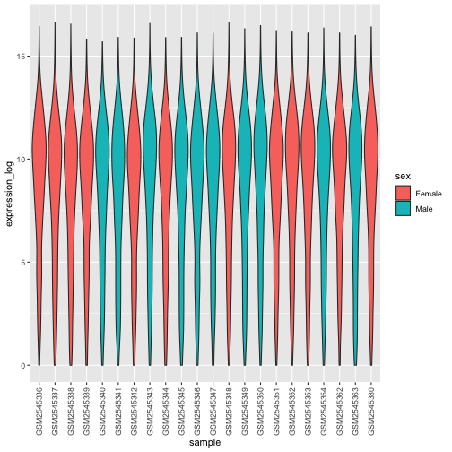
折れ線グラフ
まず、時刻0と時刻8を比較した際に対数フォールドチェンジが最大となった10個の遺伝子について、感染期間ごとの平均発現量を算出しましょう。まず、遺伝子を選択し、選択した10個の遺伝子を含むrnaのサブセットsub_rnaを作成します。次に、データをグループ化し、各グループ内での平均遺伝子発現量を算出します：
R
rna_fc <- rna_fc |> arrange(desc(time_8_vs_0))
genes_selected <- rna_fc$gene[1:10]
sub_rna <- rna |>
filter(gene %in% genes_selected)
mean_exp_by_time <- sub_rna |>
group_by(gene,time) |>
summarize(mean_exp = mean(expression_log))
出力
`summarise()` has regrouped the output.
ℹ Summaries were computed grouped by gene and time.
ℹ Output is grouped by gene.
ℹ Use `summarise(.groups = "drop_last")` to silence this message.
ℹ Use `summarise(.by = c(gene, time))` for per-operation grouping
(`?dplyr::dplyr_by`) instead.R
mean_exp_by_time
出力
# A tibble: 30 × 3
# Groups: gene [10]
gene time mean_exp
<chr> <int> <dbl>
1 Acr 0 5.07
2 Acr 4 5.54
3 Acr 8 7.31
4 Aipl1 0 3.70
5 Aipl1 4 3.89
6 Aipl1 8 6.56
7 Bst1 0 3.20
8 Bst1 4 3.77
9 Bst1 8 5.22
10 Chil3 0 4.00
# ℹ 20 more rowsx軸に感染期間、y軸に平均発現量をとった折れ線グラフを作成できます。
R
ggplot(data = mean_exp_by_time, mapping = aes(x = time, y = mean_exp)) +
geom_line()
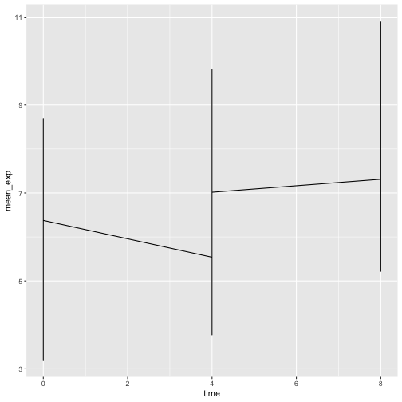
残念ながら、すべての遺伝子のデータを一括してプロットしたため、これではうまくいきません。aesthetic関数にgroup = geneを含めるように修正し、ggplotに遺伝子ごとに線を描画させる必要があります。
R
ggplot(data = mean_exp_by_time,
mapping = aes(x = time, y = mean_exp, group = gene)) +
geom_line()

色を追加すれば、プロット上で遺伝子を区別できるようになります（color
を使用するとデータも自動的にグループ化されます）：
R
ggplot(data = mean_exp_by_time,
mapping = aes(x = time, y = mean_exp, color = gene)) +
geom_line()
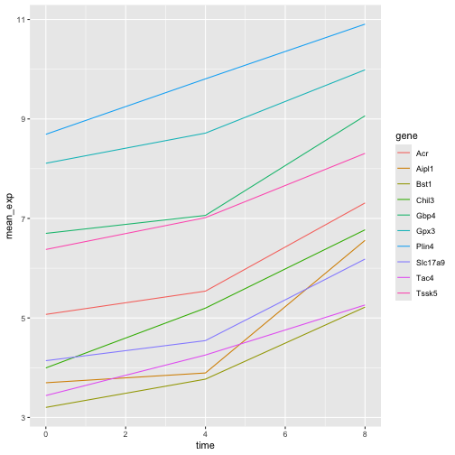
ファセット化
ggplot2には、データセットに含まれる因子に基づいて1つのプロットを複数の（サブ）プロットに分割できる「ファセット化」という特殊な手法があります。これらの異なるサブプロットは、直接比較しやすくするため、同一のプロパティ（軸の範囲、目盛りなど）を継承します。これを用いて、各遺伝子の経時変化を示す折れ線グラフを作成します。
R
ggplot(data = mean_exp_by_time,
mapping = aes(x = time, y = mean_exp)) + geom_line() +
facet_wrap(~ gene)
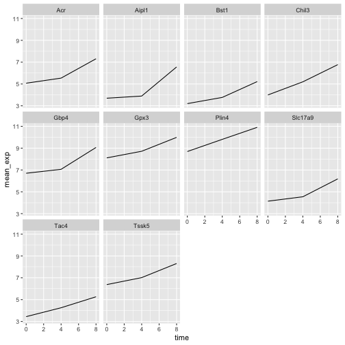
ここでは、すべてのサブプロットにおいてx軸とy軸のスケールが同一になっています。scalesを修正してy軸のスケールを自由に設定することで、このデフォルトの動作を変更できます。
R
ggplot(data = mean_exp_by_time,
mapping = aes(x = time, y = mean_exp)) +
geom_line() +
facet_wrap(~ gene, scales = "free_y")

次に、各プロットの線をマウスの性別ごとに分けたいと思います。そのためには、データフレーム内でgene、time、およびsexでグループ化した平均発現量を算出する必要があります：
R
mean_exp_by_time_sex <- sub_rna |>
group_by(gene, time, sex) |>
summarize(mean_exp = mean(expression_log))
出力
`summarise()` has regrouped the output.
ℹ Summaries were computed grouped by gene, time, and sex.
ℹ Output is grouped by gene and time.
ℹ Use `summarise(.groups = "drop_last")` to silence this message.
ℹ Use `summarise(.by = c(gene, time, sex))` for per-operation grouping
(`?dplyr::dplyr_by`) instead.R
mean_exp_by_time_sex
出力
# A tibble: 60 × 4
# Groups: gene, time [30]
gene time sex mean_exp
<chr> <int> <chr> <dbl>
1 Acr 0 Female 5.13
2 Acr 0 Male 5.00
3 Acr 4 Female 5.93
4 Acr 4 Male 5.15
5 Acr 8 Female 7.27
6 Acr 8 Male 7.36
7 Aipl1 0 Female 3.67
8 Aipl1 0 Male 3.73
9 Aipl1 4 Female 4.07
10 Aipl1 4 Male 3.72
# ℹ 50 more rows次に、colorを用いて（単一のプロット内で）さらに性別で分割することで、面分けプロットを作成できます。
R
ggplot(data = mean_exp_by_time_sex,
mapping = aes(x = time, y = mean_exp, color = sex)) +
geom_line() +
facet_wrap(~ gene, scales = "free_y")

通常、背景が白のプロットは印刷した際により見やすくなります。theme_bw()関数を使用して、背景を白に設定できます。さらに、グリッドを削除することも可能です。
R
ggplot(data = mean_exp_by_time_sex,
mapping = aes(x = time, y = mean_exp, color = sex)) +
geom_line() +
facet_wrap(~ gene, scales = "free_y") +
theme_bw() +
theme(panel.grid = element_blank())

課題
先ほど学んだ内容を活用して、感染期間を通じて各染色体の平均発現量がどのように変化するかを示すプロットを作成してください。
R
mean_exp_by_chromosome <- rna |>
group_by(chromosome_name, time) |>
summarize(mean_exp = mean(expression_log))
出力
`summarise()` has regrouped the output.
ℹ Summaries were computed grouped by chromosome_name and time.
ℹ Output is grouped by chromosome_name.
ℹ Use `summarise(.groups = "drop_last")` to silence this message.
ℹ Use `summarise(.by = c(chromosome_name, time))` for per-operation grouping
(`?dplyr::dplyr_by`) instead.R
ggplot(data = mean_exp_by_chromosome, mapping = aes(x = time,
y = mean_exp)) +
geom_line() +
facet_wrap(~ chromosome_name, scales = "free_y")
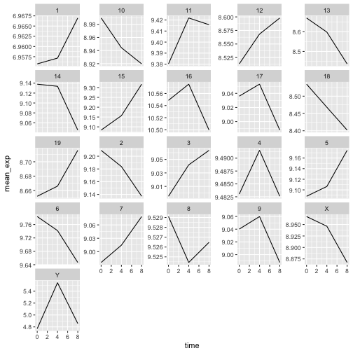
facet_wrap
ジオメトリでは、プロットを任意の次元数で抽出できるため、1ページにすっきりと収めることができます。一方、facet_grid
ジオメトリでは、数式表記を用いてプロットの配置方法を明示的に指定できます（rows ~ columns；.
は、1行または1列のみを示すプレースホルダーとして使用できます）。
先ほどのプロットを修正して、オスとメスの平均遺伝子発現が経時的にどのように変化したかを比較してみましょう。
R
# One column, facet by rows
ggplot(data = mean_exp_by_time_sex,
mapping = aes(x = time, y = mean_exp, color = gene)) +
geom_line() +
facet_grid(sex ~ .)

R
# One row, facet by column
ggplot(data = mean_exp_by_time_sex,
mapping = aes(x = time, y = mean_exp, color = gene)) +
geom_line() +
facet_grid(. ~ sex)
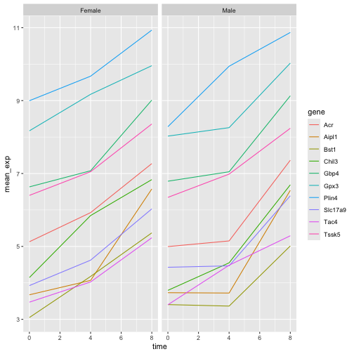
ggplot2 テーマ
プロットの背景を白に変更するtheme_bw()のほか、ggplot2には可視化の外観を素早く変更する際に役立つテーマが他にもいくつか用意されています。テーマの全一覧はhttps://ggplot2.tidyverse.org/reference/ggtheme.htmlで確認できます。theme_minimal()とtheme_light()は人気があり、theme_void()は独自のテーマを新規に作成する際の出発点として有用です。
ggthemes
パッケージでは、多彩なオプション（Excel 2003
テーマを含む）が提供されています。ggplot2
拡張機能ウェブサイト では、追加テーマを含む、ggplot2
の機能を拡張するパッケージの一覧が掲載されています。
カスタマイズ
時間と遺伝子ごとの平均発現量を、性別で色分けしたファセットプロットに戻りましょう。
ggplot2
チートシートを確認し、プロットを改善する方法を考えてみてください。
次に、軸の名前を「time」や「mean_exp」よりも分かりやすいものに変更し、図にタイトルを追加します。
R
ggplot(data = mean_exp_by_time_sex,
mapping = aes(x = time, y = mean_exp, color = sex)) +
geom_line() +
facet_wrap(~ gene, scales = "free_y") +
theme_bw() +
theme(panel.grid = element_blank()) +
labs(title = "Mean gene expression by duration of the infection",
x = "Duration of the infection (in days)",
y = "Mean gene expression")
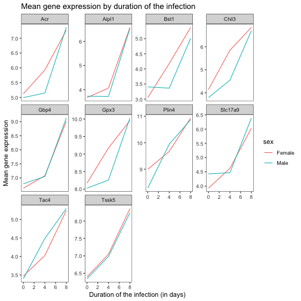
軸にはより分かりやすい名称が付けられていますが、フォントサイズを大きくすることで視認性を向上させることができます。
R
ggplot(data = mean_exp_by_time_sex,
mapping = aes(x = time, y = mean_exp, color = sex)) +
geom_line() +
facet_wrap(~ gene, scales = "free_y") +
theme_bw() +
theme(panel.grid = element_blank()) +
labs(title = "Mean gene expression by duration of the infection",
x = "Duration of the infection (in days)",
y = "Mean gene expression") +
theme(text = element_text(size = 16))

なお、プロットのフォントを変更することも可能です。Windowsをご利用の場合は、extrafontパッケージをインストールする必要がある場合があります。
さらに、x軸・y軸のテキストの色やグリッドの色などをカスタマイズできます。また、例えばlegend.positionを"top"に設定することで、凡例を上部に移動させることも可能です。
R
ggplot(data = mean_exp_by_time_sex,
mapping = aes(x = time, y = mean_exp, color = sex)) +
geom_line() +
facet_wrap(~ gene, scales = "free_y") +
theme_bw() +
theme(panel.grid = element_blank()) +
labs(title = "Mean gene expression by duration of the infection",
x = "Duration of the infection (in days)",
y = "Mean gene expression") +
theme(text = element_text(size = 16),
axis.text.x = element_text(colour = "royalblue4", size = 12),
axis.text.y = element_text(colour = "royalblue4", size = 12),
panel.grid = element_line(colour="lightsteelblue1"),
legend.position = "top")

作成した変更がデフォルトのテーマよりも気に入った場合は、オブジェクトとして保存しておけば、今後作成する他のプロットにも簡単に適用できます。以下に、以前に作成したヒストグラムを用いた例を示します。
R
blue_theme <- theme(axis.text.x = element_text(colour = "royalblue4",
size = 12),
axis.text.y = element_text(colour = "royalblue4",
size = 12),
text = element_text(size = 16),
panel.grid = element_line(colour="lightsteelblue1"))
ggplot(rna, aes(x = expression_log)) +
geom_histogram(bins = 20) +
blue_theme

課題
以上の情報を踏まえ、さらに5分ほど時間をかけて、この演習で生成したプロットのいずれかを改善するか、あるいはご自身で見栄えの良いグラフを作成してみてください。参考にRStudioのggplot2チートシートをご活用ください。いくつかアイデアを挙げます：
- 線の太さを変えられるか試してみてください。
- 凡例の名前を変更する方法はありますか？ラベルはどうでしょうか？（ヒント：
scale_で始まるggplot関数を探してみてください） - 別のカラーパレットを試すか、線の色を手動で指定してみてください（https://www.cookbook-r.com/Graphs/Colors_(ggplot2)/を参照してください）。
例えば、このプロットに基づくと：
R
ggplot(data = mean_exp_by_time_sex,
mapping = aes(x = time, y = mean_exp, color = sex)) +
geom_line() +
facet_wrap(~ gene, scales = "free_y") +
theme_bw() +
theme(panel.grid = element_blank())

以下のようにカスタマイズできます。
R
# change the thickness of the lines
ggplot(data = mean_exp_by_time_sex,
mapping = aes(x = time, y = mean_exp, color = sex)) +
geom_line(size=1.5) +
facet_wrap(~ gene, scales = "free_y") +
theme_bw() +
theme(panel.grid = element_blank())
警告
Warning: Using `size` aesthetic for lines was deprecated in ggplot2 3.4.0.
ℹ Please use `linewidth` instead.
This warning is displayed once per session.
Call `lifecycle::last_lifecycle_warnings()` to see where this warning was
generated.
R
# change the name of the legend and the labels
ggplot(data = mean_exp_by_time_sex,
mapping = aes(x = time, y = mean_exp, color = sex)) +
geom_line() +
facet_wrap(~ gene, scales = "free_y") +
theme_bw() +
theme(panel.grid = element_blank()) +
scale_color_discrete(name = "Gender", labels = c("F", "M"))

R
# using a different color palette
ggplot(data = mean_exp_by_time_sex,
mapping = aes(x = time, y = mean_exp, color = sex)) +
geom_line() +
facet_wrap(~ gene, scales = "free_y") +
theme_bw() +
theme(panel.grid = element_blank()) +
scale_color_brewer(name = "Gender", labels = c("F", "M"), palette = "Dark2")

R
# manually specifying the colors
ggplot(data = mean_exp_by_time_sex,
mapping = aes(x = time, y = mean_exp, color = sex)) +
geom_line() +
facet_wrap(~ gene, scales = "free_y") +
theme_bw() +
theme(panel.grid = element_blank()) +
scale_color_manual(name = "Gender", labels = c("F", "M"),
values = c("royalblue", "deeppink"))

プロットの合成
ファセット機能は、1つのプロットを複数のサブプロットに分割するのに便利なツールです。しかし、異なる変数や、さらには異なるデータフレームに基づいた複数の独立したプロットを、1つの図にまとめたい場合もあるでしょう。
まずは、並べて表示したい2つのプロットを作成しましょう。
最初のグラフでは、染色体ごとのユニークな遺伝子数をカウントしています。まず、chromosome_nameの水準を並べ替え、染色体ごとのユニークな遺伝子をフィルタリングします。また、視認性を高めるため、y軸のスケールをlog10スケールに変更します。
R
rna$chromosome_name <- factor(rna$chromosome_name,
levels = c(1:19,"X","Y"))
count_gene_chromosome <- rna |>
select(chromosome_name, gene) |>
distinct() |> ggplot() +
geom_bar(aes(x = chromosome_name), fill = "seagreen",
position = "dodge", stat = "count") +
labs(y = "log10(n genes)", x = "chromosome") +
scale_y_log10()
count_gene_chromosome

以下では、legend.positionを"none"に設定することで、凡例を完全に削除します。
R
exp_boxplot_sex <- ggplot(rna, aes(y=expression_log, x = as.factor(time),
color=sex)) +
geom_boxplot(alpha = 0) +
labs(y = "Mean gene exp",
x = "time") + theme(legend.position = "none")
exp_boxplot_sex

patchwork
パッケージは、+
を用いて図を（通常は左右に）配置することで、図を組み合わせるための洗練された手法を提供します。より具体的には、|
は図を明示的に左右に配置し、/
は図を上下に積み重ねます。
R
install.packages("patchwork")
R
library("patchwork")
count_gene_chromosome + exp_boxplot_sex
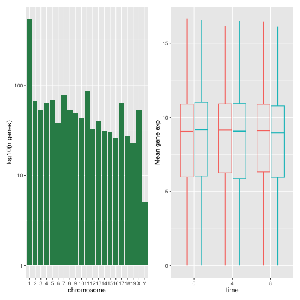
R
## or count_gene_chromosome | exp_boxplot_sex
R
count_gene_chromosome / exp_boxplot_sex

plot_layoutを用いて最終的な構成のレイアウトをさらに調整することで、より複雑なレイアウトを作成できます。
R
count_gene_chromosome + exp_boxplot_sex + plot_layout(ncol = 1)

R
count_gene_chromosome +
(count_gene_chromosome + exp_boxplot_sex) +
exp_boxplot_sex +
plot_layout(ncol = 1)

最後のプロットは、| と /
のコンポーザーを使用して作成することもできます。
R
count_gene_chromosome /
(count_gene_chromosome | exp_boxplot_sex) /
exp_boxplot_sex

patchworkの詳細については、ウェブページまたはこちらの動画をご覧ください。
別の選択肢として、grid.arrange()を用いて個別のggplotを1つの図に統合できるgridExtraパッケージがあります。
R
install.packages("gridExtra")
R
library("gridExtra")
grid.arrange(count_gene_chromosome, exp_boxplot_sex, ncol = 2)

シンプルな配置に用いるncolやnrowといった引数に加え、より複雑なレイアウトを構築するためのツールも用意されています。
プロットのエクスポート
プロットを作成した後、お好みの形式でファイルに保存できます。RStudioのPlotペインにある「Export」タブでは、プロットが低解像度で保存されます。この解像度は多くの学術誌で受理されず、ポスター用としても適切に拡大できません。
代わりに、ggsave()関数を使用してください。この関数では、適切な引数（width、height、dpi）を調整することで、プロットの寸法や解像度を簡単に変更できます。
作業ディレクトリにfig_output/フォルダがあることを確認してください。
R
my_plot <- ggplot(data = mean_exp_by_time_sex,
mapping = aes(x = time, y = mean_exp, color = sex)) +
geom_line() +
facet_wrap(~ gene, scales = "free_y") +
labs(title = "Mean gene expression by duration of the infection",
x = "Duration of the infection (in days)",
y = "Mean gene expression") +
guides(color=guide_legend(title="Gender")) +
theme_bw() +
theme(axis.text.x = element_text(colour = "royalblue4", size = 12),
axis.text.y = element_text(colour = "royalblue4", size = 12),
text = element_text(size = 16),
panel.grid = element_line(colour="lightsteelblue1"),
legend.position = "top")
ggsave("fig_output/mean_exp_by_time_sex.png", my_plot, width = 15,
height = 10)
# This also works for grid.arrange() plots
combo_plot <- grid.arrange(count_gene_chromosome, exp_boxplot_sex,
ncol = 2, widths = c(4, 6))
ggsave("fig_output/combo_plot_chromosome_sex.png", combo_plot,
width = 10, dpi = 300)
注：パラメータ width と height
は、保存されるプロットのフォントサイズも決定します。
可視化用のその他のパッケージ
ggplot2は非常に強力なパッケージであり、私たちの整然データおよび整然ツールのパイプラインに非常にうまく適合します。Rには、他にも見逃せない可視化パッケージがあります。
基本グラフィックス
Rに標準で搭載されているグラフィックスシステム（一般にbase R
graphicsと呼ばれます）は、シンプルで高速です。これはペインターモデルまたはキャンバスモデルに基づいており、異なる出力が直接重ね合わせられます（下の図参照）。この点は、専用のオブジェクトを返し、それらを画面やファイルにレンダリングし、さらには更新することさえ可能なggplot2（および後述するlattice）とは根本的に異なります。
R
par(mfrow = c(1, 3))
plot(1:20, main = "First layer, produced with plot(1:20)")
plot(1:20, main = "A horizontal red line, added with abline(h = 10)")
abline(h = 10, col = "red")
plot(1:20, main = "A rectangle, added with rect(5, 5, 15, 15)")
abline(h = 10, col = "red")
rect(5, 5, 15, 15, lwd = 3)

もう一つの主な違いは、base
graphicsのプロット関数が入力型に応じて適切な処理を行おうとする点です。つまり、入力のクラスに基づいて動作を適応させます。これは、データフレームのみを入力として受け付け、プロットを一つひとつ構築する必要があるggplot2の仕組みとは、ここでも大きく異なります。
R
par(mfrow = c(2, 2))
boxplot(rnorm(100),
main = "Boxplot of rnorm(100)")
boxplot(matrix(rnorm(100), ncol = 10),
main = "Boxplot of matrix(rnorm(100), ncol = 10)")
hist(rnorm(100))
hist(matrix(rnorm(100), ncol = 10))
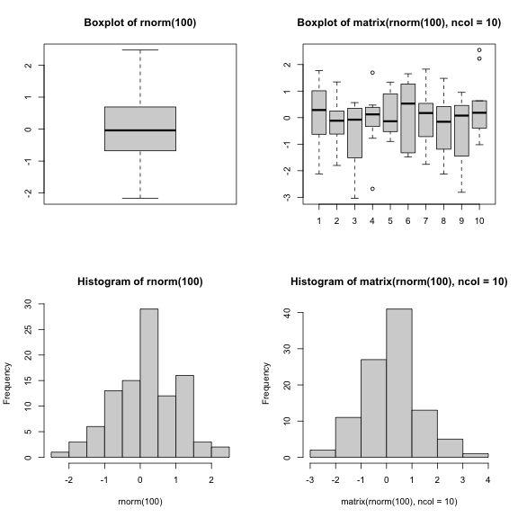
baseグラフィックスの標準機能による手法は、シンプルで標準的な図表であれば非常に効率的であり、plotやhist、boxplotといった単一の関数とわずか1行のコードで極めて迅速に作成できます。しかし、デフォルト設定が必ずしも最適とは限らず、特に図表が複雑になる場合（例えばファセットを作成する場合など）、調整作業に多大な時間と手間がかかることがあります。
latticeパッケージ
lattice
パッケージは、データフレームを入力として用い、グラフィカルなオブジェクトを返し、ファセット機能をサポートするという点で
ggplot2 と似ています。一方、lattice
はグラフィックスの文法に基づいておらず、インターフェースもより複雑です。
latticeパッケージの優れたリファレンスは Deepayan (2008). です。
- Rによる可視化
出典：データ可視化チートシート。↩︎